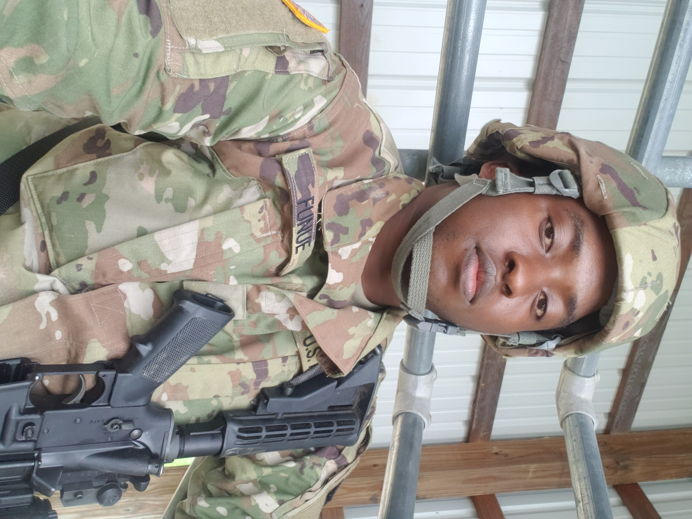

My life Journey
-

Life before the U.S
I was born on June 26, 1995, in Bamenda Cameroon. I went to primary and secondary school in Bamendankwe. I graduated from secondary school which is equivalent to one year college in the U.S by 2016. Searching for greener pasture, I migrated to the U.S through the American DV lottery by June 3rd, 2017. I spent most of my years in Baltimore Maryland.
-
My first job
After my first two weeks in the U.S, I got my first full time job At Little sisters of the poor (St. Martins Home) in Catonsville Maryland. I worked there as a dining aid. My role was getting food from the kitchen and serving it to the elderly and cleaning up after breakfast and lunch. I worked there for one and a half years.
-
My second job
While still working morning shift at Little sisters of the poor, I got my second full time job at ABM branch in Towson University. My role at ABM was cleaning the classrooms, computer labs, laboratory, toilets hallways and others. So basically, housekeeping. I worked night shift for ABM for about two years as well.
-
College life
After my one-year anniversary in the U.S, I decided to enroll into college majoring in Information Technology. Started college in 2018 at Community College of Baltimore County and graduated in 2021. I was still working my two full time jobs at this time which was challenging.
-
My third job
By late 2018, I quit the job at Little sisters of the poor and got another job as Amazon warehouse associate at Sparrows Point Blvd Baltimore MD. After working as a picker for a few months, I got an award for the best picker in the building and was later trained to work on a live floor managing faulty robots to keep the work flowing.
-
Military Biography
By early 2019, I decided to join the U.S Army reserve which has been an amazing journey. Specialist Funue has been proudly serving in the United States Army reserve for more than four years. He is 27 years old and currently stationed at 400th Military Police Battalion in Fort Mead, Maryland. Specialist Funue stated his journey in the army reserve as E1 with a high school diploma. He completed basic training and advance individual training as a Horizontal Construction Engineer (12N) at Fort Leonard Wood Missouri in 2019. Presently, he is certified to operate 8 military heavy equipment and his most recent achievement was completing a bus drivers training in New York on May 2022. Within this four years, specialist Funue has served as a team leader and squared leader alongside his platoon Sergeant. He has received an award for three years of exemplary behavior, efficiency and fidelity while serving as a member of the United States Army Reserve (IAW AR 600-8-22, pa. 4-18).
-
Corrections
By mid-2021, I join the Baltimore department of Corrections. While working there, I was trained and certified as a correctional officer. After spending a year and some months, I decided to quit the job because it wasn’t for me. This was when I decided to focus and pursue my education.
-
Present predicament
Within four months of quitting my job, I acquired my associate degree and two cybersecurity certifications. I immediately enrolled in the University of Maryland Global Campus for my bachelor’s degree. While trying to get an entry level job in the industry, skill storm became my best option through Vet-Tec
class="article" style="padding-left: 40px;" From an operational perspective, Specialist Funue has a bias to action and is very proactive. He is great at setting and meeting objectives that are specific, measurable, actual, realistic and time bound. He is a pace setter and has leadership skills that set him apart. From conception through implementation specialist Funue is impartial in his participation in any projects regardless of its size and complexity. He brings the needed rigor to any project team is willing to learn and share.